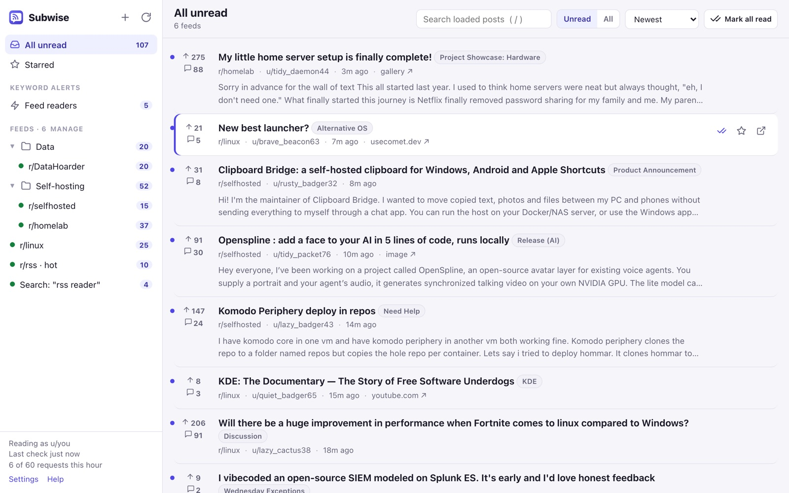

Follow subreddits, users and searches in one reader, with unread counts, filters and notifications. Bring your old RSS links over in one paste. Free for 10 feeds.
Chrome · Edge · Firefox · No account · Your data stays in your browser
On September 30, 2026, Reddit announced it will stop supporting RSS feeds on November 13, 2026, and said that if you use RSS for anything outside a community you moderate, there is no replacement (Reddit’s announcement in r/modnews; TechCrunch). Its public API stops taking new requests on October 31 and closes in March 2027 (r/redditdev).
Reading Reddit while logged in is not affected. Subwise is built on exactly that: it reads the subreddits, users and searches you follow through your own logged-in browser session, politely, and shows them in one place.
Read the full guide: Reddit RSS is gone, here’s how to keep following subreddits →
Paste your old .rss links or open an OPML file from Feedly, Inoreader, NetNewsWire, FreshRSS or Miniflux. Subreddits, searches, users, multireddits, threads, saved posts and inbox feeds convert automatically.
Unread counts, folders, stars, search, score and comment counts, keyboard shortcuts, light and dark themes. In a tab, the side panel or the Firefox sidebar.
Per-feed filters for keywords, flairs, minimum score or comments, NSFW and pinned posts. “Show r/x posts once they reach 100 upvotes” works.
Desktop notifications per feed, and an unread count on the toolbar icon. Every post opens on reddit.com.
Hear about mentions of your product, name or topic across all of Reddit, with webhooks to Discord, Slack, ntfy, n8n or Zapier, and CSV/JSON export.
No Subwise servers, no account, no tracking. Feeds and posts stay in your browser. Only titles, links and short snippets are stored, and old ones are cleaned up.
Subwise understands every kind of Reddit RSS address: /r/x/.rss, /r/x/new/.rss, /r/a+b/.rss, search.rss?q=…, user and multireddit feeds, comment threads, and the private saved, inbox and front-page feeds. Private links lose their secret feed= token; Subwise reads those through your session instead.


GummySearch has closed and F5Bot depends on the API that’s ending. Subwise Pro watches Reddit search and the feeds you follow for the words you care about, and tells you on your desktop, in Discord or Slack, on your phone through ntfy, or in your n8n and Zapier flows.
Follow up to 10 subreddits, users or searches. Reader, filters, notifications, import and export of your feed list.
Unlimited feeds, keyword alerts across Reddit, webhooks and CSV/JSON export. Cancel anytime.
Same as monthly, 33% less.
Pay once, every future update included.
Payments by Gumroad. 30-day money-back guarantee. Buy from inside the extension (Settings → Pro).
How to keep following subreddits after November 13, 2026, and what each option costs you.
Turn your search.rss feeds into searches that keep working.
Monitor Reddit for your product, brand or topic.
Feedly, Inoreader, NetNewsWire, FreshRSS, Miniflux.
Yes. Reddit stopped serving its data pages (.json) to logged-out visitors in May 2026, and Subwise only reads Reddit as you, through your logged-in session. A free account that never posts is enough.
Subwise behaves like a person leaving a Reddit tab open: a few requests an hour per feed, an overall cap of about one a minute, and an immediate stop if Reddit pushes back. It doesn’t post, vote or comment, and it never works around Reddit’s checks. Reddit hasn’t published rules for browser extensions, so we keep the footprint small on purpose.
No. Republishing Reddit as a public feed is exactly what Reddit is shutting down, so Subwise keeps your feeds in its own reader instead. Pro webhooks can push new posts (titles, links, short snippets) to Discord, Slack, ntfy or your automations.
No. Subwise runs in your browser, so it checks while the browser is open and catches up when you open it again.
In your browser only. There are no Subwise servers. See the privacy policy.